Editing Source Code
Quincy's editor is a typical text editor similar to those found in most software development environments. If you know how to enter text into Notepad, you'll know how to use Quincy. There are
editor options you can set to change how Quincy displays text as you enter it. You can change the colors of the text display, how tabs are expanded, and whether the editor autoindents as you type.
Entering Text
Enter text by typing it. Quincy does not support word wrapping; the editor window scrolls horizontally if you type past the right margin. If you have syntax highlighting selected in the
editor options,
the text changes color as the editor parses those text elements--comments, key words, and string literals--that should be highlighted as shown here.
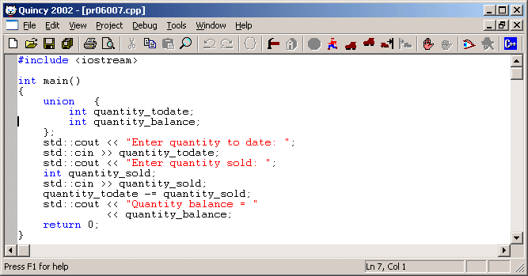
The Insertion Cursor
Observe the vertical black bar in the first column position on line 12 in the illustration above. That is the text insertion cursor. Although this illustration is static, when Quincy is running, the insertion cursor blinks so you can find it when you need to.
When you type, the characters you type go where the cursor is positioned, and the cursor moves to the next position.
You can move the insertion cursor several ways:
- Use the Home, End, Page Up, Page Down, and arrow keys.
- Use those keys with the Ctrl key depressed.
- Click in the editor window with the mouse.
The small pane in Quincy's status bar displays the current line and column position of the insertion cursor.
It is possible for the insertion cursor to be out of sight. If you scroll the document window horizontally or vertically with the scroll bars and the mouse, you can put the insertion cursor off screen. But it is still there. If you start typing when the insertion cursor is out of sight, Quincy changes the text's scrolling position so that the line where the insertion cursor is positioned is in view.
Quincy's editor does not have Insert/Overwrite modes of text entry like other editors do. Quincy is always in Insert mode, which is how editing source code is typically done.
Selecting Text
Many editing operations are affected by whether a block of text is selected. Selected text is identified by a video highlight around the text. A selected block can span several lines of text as shown here.
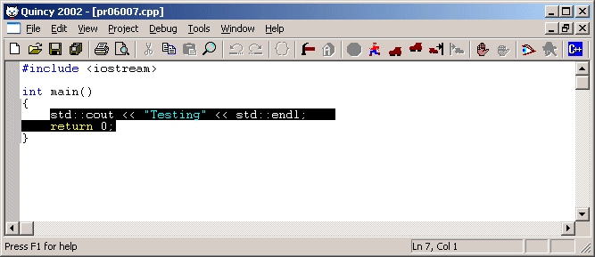
You can select a block of text several ways:
- With the keyboard:
- Move the selection cursor to one end of the block
- Hold down the shift key
- Move the selection cursor with the keyboard as described above.
- By dragging the mouse:
- Move the mouse to one end of the block
- Hold down the left mouse button
- Drag the moust to the other end of the block
- Double-click a word to select only that word.
- By performing a Find operation
- To select all the text in the document press Ctrl+A or choose the Select All command on the Edit menu.
Unselecting Text
Almost any keyboard or mouse operation that does not affect a block of text will unselect it. Moving the insertion cursor, clicking elsewhere in the editor window, for example will unmark the text.
Typing Into Selected Text
If you type a character when a block of text is selected, the character you type replaces the block of text.
Deleting Text
There are several ways to delete text from the source code document.
- Press the Del key to delete the character to the right of the insertion cursor.
- Press the Backspace key to delete the character to the left of the insertion cursor.
- Select a block of text and press either the Del or Backspace key or choose the Clear command on the Edit menu.
Moving and Copying Selected Text
Moving Text
- Select the block of text you want to move.
- Right click the mouse cursor anywhere inside the selection and do not release the mouse button.
This action changes the mouse cursor to the one shown here.
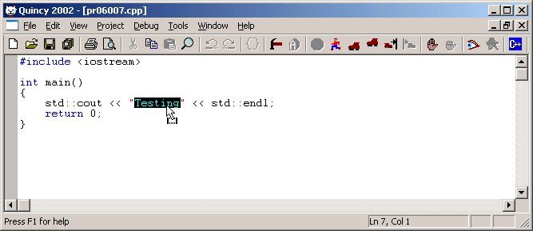
- Drag the mouse cursor. As you do, the insertion cursor follows.
- When the insertion cursor is at the position where you want to move the text, release the mouse button.
Copying Text
- Select the block of text you want to move.
- Hold down the Ctrl key
- Right click the mouse cursor anywhere inside the selection and do not release the mouse button.
This action changes the mouse cursor to the one shown here.
- Drag the mouse cursor. As you do, the insertion cursor follows.
- When the insertion cursor is at the position where you want to copy the text, release the mouse button.
Using the Clipboard
Windows applications use a system-wide scratchpad called the clipboard. Applications use the clipboard to exchange data between each other and as an interim storage location within the application. The clipboard works in the background. Users rarely see its contents except when the application itself extracts data from the clipboard. There are three clipboard operations,
Cut,
Copy
and
Paste,
Cut
The Cut operation places the text in the currently selected block into the clipboard and then deletes the selected block from the source code document. Cut requires a selected block. If there is no selection, the Cut command is disabled.
- Select a block of text to cut to the clipboard
- Click the Cut button.
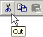
- Or choose the Cut command on the Edit menu.
- Or press Ctrl+X
Copy
The Copy operation places the text in the currently selected block into the clipboard and leaves the selected block marked. If no block is selected, Copy copies the current line of text where the insertion cursor is positioned.
- Select a block of text to copy to the clipboard
- Click the Copy button.
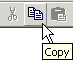
- Or choose the Copy command on the Edit menu.
- Or press Ctrl+C
Paste
Paste places the current contents of the clipboard into the document at the position where the insertion cursor points or where a selected block of text is marked. If the clipboard is empty, the Paste command is disabled.
- Position the insertion cursor at the place in the source code document to insert the text from the clipboard.
- Or select a block of text to replace with the text from the clipboard
- Click the Paste button.
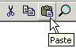
- Or choose the Paste command on the Edit menu.
- Or press Ctrl+V
The clipboard is available to all the applications running in the current Windows session. Consequently, you can place text from another application in the clipboard and paste it into a Quincy source code document. Similarly, you can place text from Quincy into the clipboard and paste it into another application that supports text pasting.
Some applications use the clipboard for graphical data. If the clipboard contains a graphical image, the clipboard looks empty to Quincy because Quincy does not work with graphics.
Searching for Text
Quincy's text search and replace operations work on the currently selected document. If you want to search multiple source code files for a match on a text argument, read about the
Grep
tool.
Find
To find text in the current active source code document:
- Click the Find button.
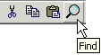
- Or choose the Find command on the Edit menu.
- Or press Ctrl+F
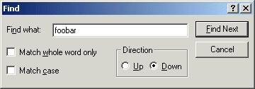
- Type a search string in the Find What edit box control.
- Check Match Whole Word Only if you want to ignore words in which your argument is partially represented
- Check Match Cast if you want the search to match only if the case in the text is the same as the case in the dialog.
- Select Up if you want Quincy to search backward from the current insertion cursor position or Down to search forward.
- Click Find Next to begin the search.
If Quincy cannot find the text you specified, this dialog displays.
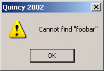
Otherwise Quincy locates the text, selects it, and scrolls the display so that the found text is in view like this:
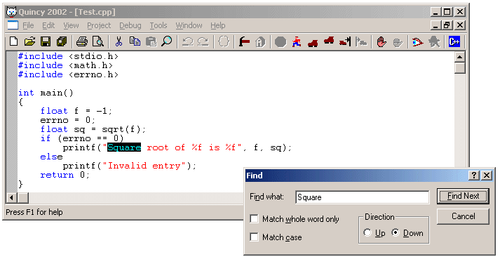
Observe that the Find dialog remains open.
- Click Find Next on the Find dialog to find the next match to the search argument in the document.
- Click Cancel on the Find dialog to close the dialog.
Replace
You can search for a matching text string and replace it with a different one.
- Choose the Replace command on the Edit menu.
- Or press Ctrl+F
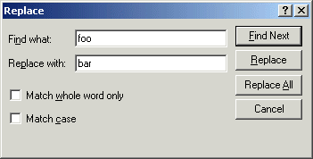
- Enter the search and replace text strings in the Replace dialog
- Select the whole word and case options just as with the Find dialog above.
- Click Find Next or Replace to find the first matching text string.
- If Quincy finds a matching string, click Replace to replace it.
- Or click Replace All to replace all matches in the file with the replacement text.
Find Next
Find Next works only when there has been a previous find. This condition applies across Quincy source code documents during a session. Having searched one document for a match, you can switch to another document and use Find Next to find the same text.
- Choose the Find Next command on the Edit menu.
- Or press F3
- Or open the Find dialog as explained above and use its Find Next button.
Brace Matching
Quincy knows about how C and C++ source code files use the brace characters, { and }, to mark statement blocks. Quincy also understands that these blocks can be nested and that some incidences of brace characters in a source code file are not statement block markers. Braces inside comments, string literals, and character literals are not markers. Quincy's brace matching feature helps you find the brace that matches a selected brace. To use this feature:
- Position the insertion cursor immediately to the left of a brace character. This action enables the Match Braces command.
- Execute the Match Braces command.
- Click the Match Braces button.
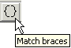
- Or choose the Match Braces command on the Edit menu.
- Or press Ctrl+{
Quincy positions the insertion cursor to the left of the brace character that matches the one you selected. If you selected an open brace character, Quincy searches forward for the matching close brace character. If you selected a close brace character, Quincy searches backward for the matching open brace character.
If there is no matching brace character, Quincy displays this message:
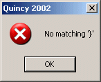
Undo and Redo
Quincy's editor includes undo and redo operations to let you correct editing mistakes.
Undo
The Undo command undoes the most recent text editing operation. The operations are stacked, so you can undo changes all the way back to where you first loaded the source code file or last saved it. If there have been no changes to the file, the Undo command is disabled.
An undoable operation is anything that changes the text in the source code. If you type a line of text, that is one undoable operation. If you do a file-length find and replace, that, too is one undoable operation. Deletes are operations of their own.
To undo editing operations:
- Click the Undo button.
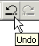
- Or choose the Undo command on the Edit menu.
- Or press Ctrl+Z
Redo
The Redo command redoes as many actions as have been undone. If you have not undone any actions or if you have redone all the stacked undone actions, the Redo command is disabled. To redo undone editing operations:
- Click the Redo button.
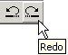
- Or choose the Redo command on the Edit menu.
- Or press Ctrl+Y
<--previous page
next page-->